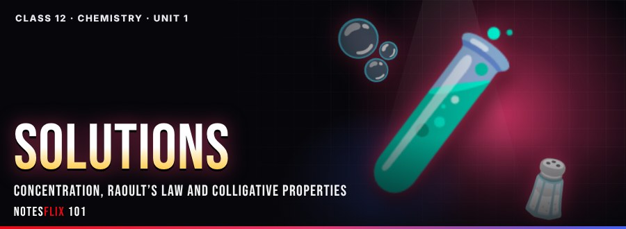
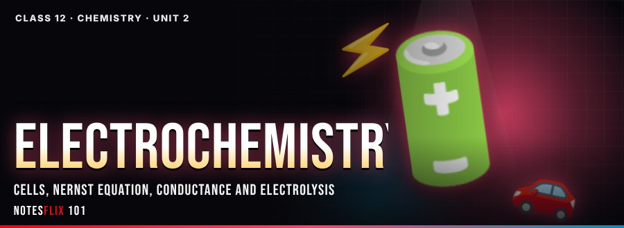
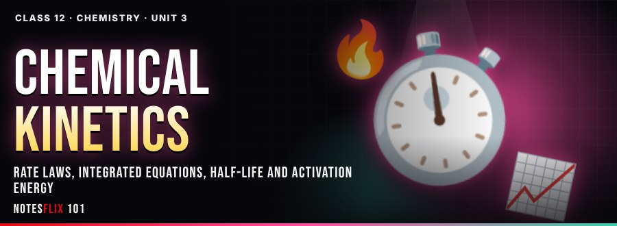
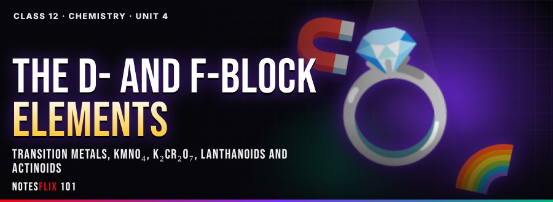
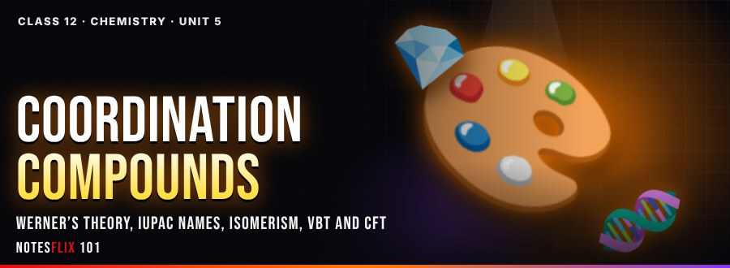
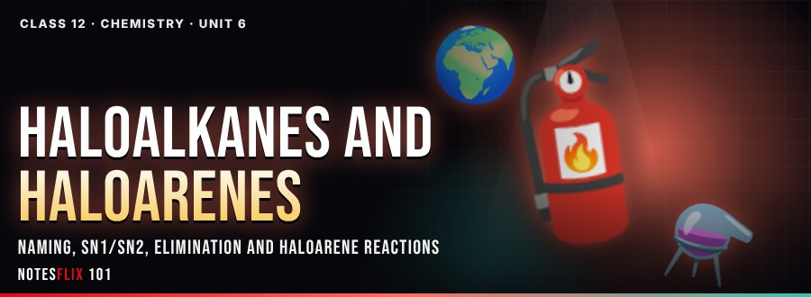
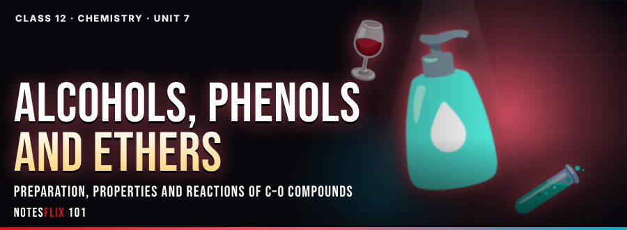
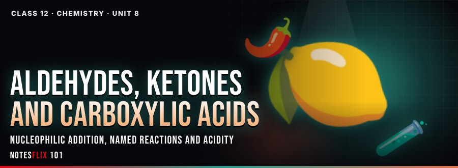
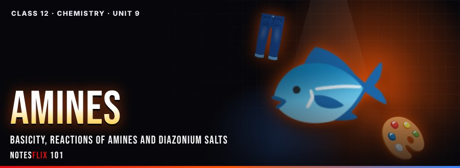
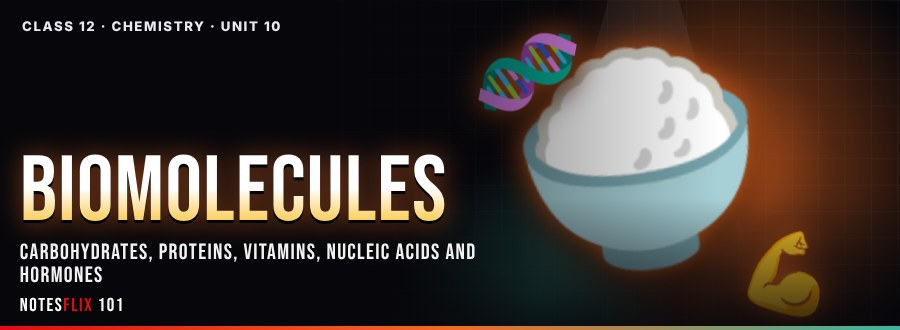

Class 12 Chemistry Notes
Interactive CBSE Class 12 Chemistry notes from Notesflix 101. They follow the CBSE syllabus and NCERT textbook for Class 12. Each chapter is broken into short parts with easy explanations, picture stories, flash cards, quizzes and board-style exam questions with model answers. All 40 parts open with a password from Notesflix 101.
Chapters

Unit 1: Solutions
Concentration, Raoult’s law and colligative properties
- Types of solutions, concentration and solubility (Part 1)PASSWORD — Types of solutions, concentration and solubility. Explore the Concentration Mixer and the Henry’s Law Fizz Chamber, play Unit Juggler, watch the motion scene, and do the virtual lab: enthalpy of dissolution (CBSE practical C, thermochemistry). (45 min)
- Vapour pressure, Raoult’s law and non-ideal solutions (Part 2)PASSWORD — Vapour pressure, Raoult’s law and non-ideal solutions. Explore the Raoult’s Law Plotter and the Escape Counter: why solutes lower vapour pressure, play Deviation Detective, watch the motion scene, and do the virtual lab: enthalpy of mixing acetone and chloroform (CBSE practical C). (45 min)
- Colligative properties and abnormal molar masses (Part 3)PASSWORD — Colligative properties and abnormal molar masses. Explore the Colligative Calculator: boil, freeze, push and the Osmosis U-tube and reverse osmosis, play Colligative Clash, watch the motion scene, and do the virtual activity: molar mass by depression of freezing point. Ends with the Unit 1 final test. (50 min)
- NCERT Exercises SolvedPASSWORD — All 41 end-of-unit NCERT exercises of Solutions, solved step by step, with hints and an answer checker for numericals. (60 min)

Unit 2: Electrochemistry
Cells, Nernst equation, conductance and electrolysis
- Galvanic cells, electrode potentials and the Nernst equation (Part 1)PASSWORD — Galvanic cells, electrode potentials and the Nernst equation. Explore the Cell Builder and the Nernst Dial: Daniell cell, play Potential Showdown, watch the motion scene, and do the virtual lab: cell potential of the Daniell cell against concentration (CBSE practical D). (50 min)
- Conductance of electrolytic solutions (Part 2)PASSWORD — Conductance of electrolytic solutions. Explore the Dilution Lab: κ and Λm and the Kohlrausch Tile Builder, play Conductance Quest, watch the motion scene, and do the virtual activity: dissociation constant of acetic acid by conductometry. (45 min)
- Electrolysis, batteries, fuel cells and corrosion (Part 3)PASSWORD — Electrolysis, batteries, fuel cells and corrosion. Explore the Electrolysis Bench and the Battery Teardown, play Faraday Frenzy, watch the motion scene, and do the virtual activity: faraday’s first law with a copper coulometer. Ends with the Unit 2 final test. (50 min)
- NCERT Exercises SolvedPASSWORD — All 18 end-of-unit NCERT exercises of Electrochemistry, solved step by step, with hints and an answer checker for numericals. (60 min)

Unit 3: Chemical Kinetics
Rate laws, integrated equations, half-life and activation energy
- Rate of reaction, rate law, order and molecularity (Part 1)PASSWORD — Rate of reaction, rate law, order and molecularity. Explore the Rate Tracker: average vs instantaneous and the Order Finder: initial-rate experiments, play Order Up!, watch the motion scene, and do the virtual lab: effect of concentration on rate, sodium thiosulphate + HCl (CBSE practical B1). (45 min)
- Integrated rate equations and half-life (Part 2)PASSWORD — Integrated rate equations and half-life. Explore the Order Grapher and the Carbon Dating Desk, play Half-life Hustle, watch the motion scene, and do the virtual activity: decomposition of H₂O₂ followed by KMnO₄ titration. (50 min)
- Temperature, activation energy and collision theory (Part 3)PASSWORD — Temperature, activation energy and collision theory. Explore the Boltzmann Energy Spread and the Arrhenius Plotter, play Barrier Blitz, watch the motion scene, and do the virtual lab: effect of temperature on the reaction between Na₂S₂O₃ and HCl. Ends with the Unit 3 final test. (50 min)
- NCERT Exercises SolvedPASSWORD — All 30 end-of-unit NCERT exercises of Chemical Kinetics, solved step by step, with hints and an answer checker for numericals. (60 min)

Unit 4: The d- and f-Block Elements
Transition metals, KMnO₄, K₂Cr₂O₇, lanthanoids and actinoids
- Transition elements: configuration and general properties (Part 1)PASSWORD — Transition elements: configuration and general properties. Explore the Configuration Studio and the Trend Explorer: Sc to Zn, play Unpaired Rush, watch the motion scene, and do the virtual lab: identify the transition-metal cation (salt analysis). (55 min)
- Oxidation states, K₂Cr₂O₇ and KMnO₄ (Part 2)PASSWORD — Oxidation states, K₂Cr₂O₇ and KMnO₄. Explore the Chromate–Dichromate pH Switch and the Oxidiser Bench, play Redox Rally, watch the motion scene, and do the virtual lab: molarity of KMnO₄ by titration. (55 min)
- Lanthanoids, actinoids and applications (Part 3)PASSWORD — Lanthanoids, actinoids and applications. Explore the Contraction Tracker and the Oxidation-State Map, play f-Block Face-off, watch the motion scene, and do the virtual lab: preparation of Mohr’s salt. Ends with the Unit 4 final test. (50 min)
- NCERT Exercises SolvedPASSWORD — All 38 end-of-unit NCERT exercises of The d- and f-Block Elements, solved step by step, with hints and an answer checker for numericals. (60 min)

Unit 5: Coordination Compounds
Werner’s theory, IUPAC names, isomerism, VBT and CFT
- Werner’s theory, key terms and IUPAC names (Part 1)PASSWORD — Werner’s theory, key terms and IUPAC names. Explore the Werner’s Silver Test and the Complex Decoder, play Ligand Lineup, watch the motion scene, and do the virtual activity: how many chlorides are ionisable?. (55 min)
- Isomerism in coordination compounds (Part 2)PASSWORD — Isomerism in coordination compounds. Explore the Isomer Viewer and the Structural Isomer Detective, play Isomer Count Clash, watch the motion scene, and do the virtual lab: separating two cations by paper chromatography. (50 min)
- Bonding, colour, magnetism and applications (Part 3)PASSWORD — Bonding, colour, magnetism and applications. Explore the Crystal Field Splitter and the VBT Hybridiser, play Spin Showdown, watch the motion scene, and do the virtual lab: preparation of potassium ferric oxalate. Ends with the Unit 5 final test. (60 min)
- NCERT Exercises SolvedPASSWORD — All 31 end-of-unit NCERT exercises of Coordination Compounds, solved step by step, with hints and an answer checker for numericals. (60 min)

Unit 6: Haloalkanes and Haloarenes
Naming, SN1/SN2, elimination and haloarene reactions
- Classification, naming, preparation and physical properties (Part 1)PASSWORD — Classification, naming, preparation and physical properties. Explore the Halide Classifier and the Boiling Point Lab, play Reagent Rush, watch the motion scene, and do the virtual activity: which halogen is in the alkyl halide?. (55 min)
- Reactions of haloalkanes: SN1, SN2, elimination, metals (Part 2)PASSWORD — Reactions of haloalkanes: SN1, SN2, elimination, metals. Explore the SN1 vs SN2 Arena and the Zaitsev Eliminator, play Mechanism Match, watch the motion scene, and do the virtual activity: which bromide reacts fastest by SN1?. (60 min)
- Haloarenes and polyhalogen compounds (Part 3)PASSWORD — Haloarenes and polyhalogen compounds. Explore the Nitro Booster and the Polyhalogen Files, play Arene Arena, watch the motion scene, and do the virtual activity: the iodoform test. Ends with the Unit 6 final test. (50 min)
- NCERT Exercises SolvedPASSWORD — All 22 end-of-unit NCERT exercises of Haloalkanes and Haloarenes, solved step by step, with hints and an answer checker for numericals. (60 min)

Unit 7: Alcohols, Phenols and Ethers
Preparation, properties and reactions of C–O compounds
- Classification, naming, preparation and physical properties (Part 1)PASSWORD — Classification, naming, preparation and physical properties. Explore the Grignard Alcohol Builder and the Hydrogen Bond Showdown, play Alcohol Architect, watch the motion scene, and do the virtual lab: tests for the alcoholic group. (55 min)
- Reactions of alcohols and phenols (Part 2)PASSWORD — Reactions of alcohols and phenols. Explore the Acidity Ladder and the Oxidation Station, play Phenol Frenzy, watch the motion scene, and do the virtual lab: tests for the phenolic group. (60 min)
- Ethers: preparation, properties and reactions (Part 3)PASSWORD — Ethers: preparation, properties and reactions. Explore the Williamson Planner and the HI Cleaver, play Ether Express, watch the motion scene, and do the virtual activity: the Lucas test. Ends with the Unit 7 final test. (50 min)
- NCERT Exercises SolvedPASSWORD — All 33 end-of-unit NCERT exercises of Alcohols, Phenols and Ethers, solved step by step, with hints and an answer checker for numericals. (60 min)

Unit 8: Aldehydes, Ketones and Carboxylic Acids
Nucleophilic addition, named reactions and acidity
- Aldehydes and ketones: naming, structure and preparation (Part 1)PASSWORD — Aldehydes and ketones: naming, structure and preparation. Explore the Preparation Router and the Boiling Point Line-up, play Carbonyl Quest, watch the motion scene, and do the virtual lab: test for the carbonyl group (2,4-DNP). (55 min)
- Reactions of aldehydes and ketones (Part 2)PASSWORD — Reactions of aldehydes and ketones. Explore the Reagent Station and the Aldol and Cannizzaro Mixer, play Carbonyl Clash, watch the motion scene, and do the virtual lab: tell aldehydes from ketones. (65 min)
- Carboxylic acids (Part 3)PASSWORD — Carboxylic acids. Explore the Sour Scale and the Derivative Workshop, play Acid Arena, watch the motion scene, and do the virtual lab: tests for the carboxylic group. Ends with the Unit 8 final test. (60 min)
- NCERT Exercises SolvedPASSWORD — All 20 end-of-unit NCERT exercises of Aldehydes, Ketones and Carboxylic Acids, solved step by step, with hints and an answer checker for numericals. (60 min)

Unit 9: Amines
Basicity, reactions of amines and diazonium salts
- Structure, naming, preparation and physical properties (Part 1)PASSWORD — Structure, naming, preparation and physical properties. Explore the Amine Factory and the H-Bond Ladder, play Amine Arcade, watch the motion scene, and do the virtual activity: hinsberg test. (55 min)
- Basic character and chemical reactions (Part 2)PASSWORD — Basic character and chemical reactions. Explore the Basicity Ladder and the Aniline Workshop, play Reaction Roulette, watch the motion scene, and do the virtual lab: preparation of acetanilide. (60 min)
- Diazonium salts (Part 3)PASSWORD — Diazonium salts. Explore the Diazonium Switchboard and the Coupling Studio, play Diazo Dash, watch the motion scene, and do the virtual lab: 2-Naphthol aniline dye. Ends with the Unit 9 final test. (60 min)
- NCERT Exercises SolvedPASSWORD — All 14 end-of-unit NCERT exercises of Amines, solved step by step, with hints and an answer checker for numericals. (60 min)

Unit 10: Biomolecules
Carbohydrates, proteins, vitamins, nucleic acids and hormones
- Carbohydrates (Part 1)PASSWORD — Carbohydrates. Explore the Glucose Detective and the Sugar Linker, play Sugar Rush, watch the motion scene, and do the virtual lab: tests for carbohydrates. (60 min)
- Amino acids, proteins and enzymes (Part 2)PASSWORD — Amino acids, proteins and enzymes. Explore the Zwitterion pH Meter and the Protein Origami, play Protein Power-up, watch the motion scene, and do the virtual lab: tests for proteins. (55 min)
- Vitamins, nucleic acids and hormones (Part 3)PASSWORD — Vitamins, nucleic acids and hormones. Explore the Vitamin Clinic and the DNA Zipper, play Bio Blitz, watch the motion scene, and do the virtual lab: detecting nutrients in foodstuffs. Ends with the Unit 10 final test. (55 min)
- NCERT Exercises SolvedPASSWORD — All 25 end-of-unit NCERT exercises of Biomolecules, solved step by step, with hints and an answer checker for numericals. (60 min)
Frequently asked questions
Are the Class 12 Chemistry notes free?
All 40 parts open with a password from Notesflix 101.
Which syllabus do these Class 12 Chemistry notes follow?
They follow the CBSE syllabus and NCERT textbook for Class 12. Every chapter is split into short interactive parts with simple explanations, flash cards, quizzes and board-style exam questions with model answers.
How many chapters are covered?
10 chapters: Solutions; Electrochemistry; Chemical Kinetics; The d- and f-Block Elements; Coordination Compounds; Haloalkanes and Haloarenes; Alcohols, Phenols and Ethers; Aldehydes, Ketones and Carboxylic Acids; Amines; Biomolecules.
How do I get the password for locked notes?
Email support@notesflix101.com with your name, class, school and the Gmail ID you sign in with. The same password opens every locked Chemistry note.